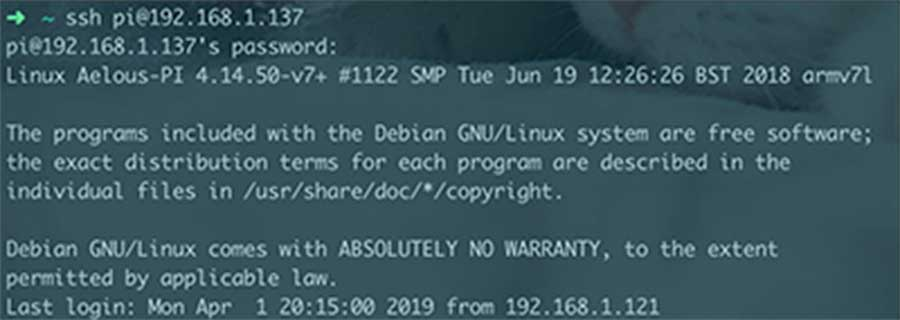
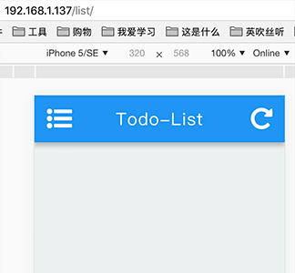

前些日子跟着慕课网做了一个 Vue.js 仿饿了么 App 的实战项目，讲到部署的部分，正好手上有个树莓派闲置，那就搭个服务器试试吧。
目的
搭建服务器目的是将 Vue.js 实战项目部署在服务器上，加深对服务器部署的熟练度
硬件
树莓派 3b+ && 电源 && MBP && 路由器
连接
iTerm2 -> ssh 连接方式
依赖
- linux (arm v7l) (32 位系统)
- nodejs (v10.15.3)
- npm (6.4.1)
- nginx (nginx/1.10.3)
详细说明
连接树莓派
将树莓派开机，命令行运行 ifconfig，查看树莓派 IP 地址
得到 192.168.1.137
在 iterm2 窗口 输入命令 ssh pi@192.168.1.137 输入密码 ***
连接成功
安装 nodejs
系统自带 nodejs 版本过老，为 v0.10 版本，所以要去官网下载最新的 nodejs
使用命令 uname -a 查询系统信息
1 | pi@PI:~ $ uname -a |
在官网选中对应的 linux 二进制文件

在命令行输入 wget + 链接
然后 tar -xvf + 文件名 （-xvf 代表：解压，显示所有过程，使用档案名字）
mv 文件名 nodejs(重命名)
cd nodejs/bin
./node -v（此时系统 node 版本为 0.10，此处 node 版本为 10.15）
pwd 获取当前文件位置
ln -s /home/pi/nodejs/bin/node /usr/local/bin（修改环境变量）
ln -s /home/pi/nodejs/bin/npm /usr/local/bin
nano /etc/profile（修改 PATH 强制指向）
source /etc/profile
安装完成
部署项目
cd ~ 进入根目录
配置 git (不详细说了就)
从 git 克隆 Vue-sell 项目
cd Vue-sell (进入文件夹)
npm i (安装依赖)
npm run build (打包编译)
nohup node prod.server.js & (进程常驻，退出服务器进程不终结)
IP+端口可以访问
域名申请（此处不涉及）
nginx 线上部署
树莓派安装 nginx
- 命令 sudo apt-get install nginx
启动 nginx
- 命令 sudo /etc/init.d/nginx start
测试安装
局域网浏览器访问：192.168.1.137 搭建成功

修改 nginx 配置文件
- 命令 sudo nano /etc/nginx/sites-available/default
1 | server { |
重新加载
- 命令 sudo /etc/init.d/nginx reload
关闭 nginx
- 命令 sudo /etc/init.d/nginx stop
断开连接
control + D 断开和树莓派连接
测试
连接路由器
访问192.168.1.137，成功重定向至 Github
访问192.168.1.137/sell/，反向代理至 Vue-sell
添加项目
将之前写过的 List-App 项目添加至服务器的 9000 端口
编写 nodejs 服务器
1 | const express = require('express') |
转移到树莓派
git pull 和 Vue-sell 是一样的
然后运行 npm i 以及 nohup node prod.server.js &
修改 nginx 配置
1 | location /list/ { # 反向代理 |
再次装载
实现效果
| 效果图-sell | 效果图-list |
|---|---|
|  |
出现问题
在访问 192.168.1.137/list 时 network 中提示有一个 XDP 的图标访问。
问题如图所示：


怀疑是重定向到 github 的跳转导致的问题。
修改了重定向位置，问题消失，再改回来，问题再没出现。
额外补充
在 setting.json 中添加 “markdownlint.config”: {“MD033”: false},
配置 markdown no-inline-html 为 false 可以在 markdown 中添加 html 语法，便于修改图片尺寸。
使用 nginx 做服务器时，不要将之与 nodejs 混淆，nodejs 是开启了一个服务然后监听了端口，nginx 的作用是通过反向代理将不同的访问对应到相应的端口上去。